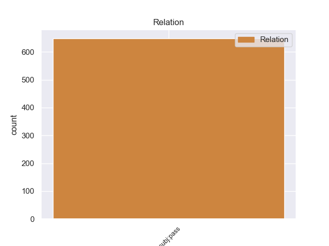
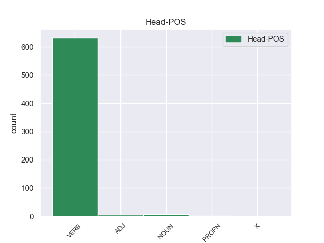
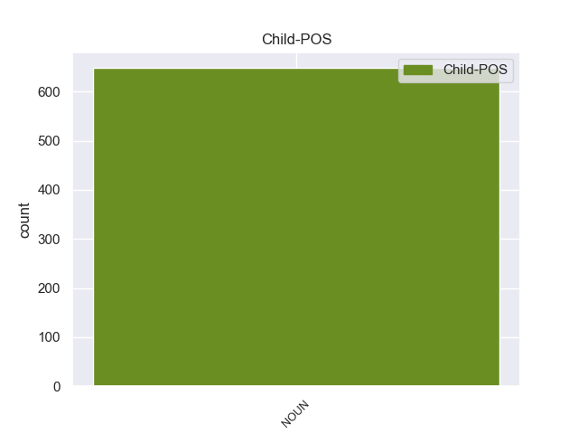

Distribution of features within this leaf



Agreement Rules sorted by frequency.
- When the dependent token is the passive nominal subject(nsubj:pass) of the head token, and the head token is VERB and the dependent token is NOUN.
1 Con _ _ _ _ 0 _ _ _
2 miras _ _ _ _ 0 _ _ _
3 a _ _ _ _ 0 _ _ _
4 minimizar _ _ _ _ 0 _ _ _
5 cualquier _ _ _ _ 0 _ _ _
6 confusión _ _ _ _ 0 _ _ _
7 con _ _ _ _ 0 _ _ _
8 una _ _ _ _ 0 _ _ _
9 religión _ _ _ _ 0 _ _ _
10 , _ _ _ _ 0 _ _ _
11 el _ _ _ _ 0 _ _ _
12 uso uso NOUN _ Gender=Masc|Number=Sing 28 nsubj:pass _ _
13 de _ _ _ _ 0 _ _ _
14 la _ _ _ _ 0 _ _ _
15 palabra _ _ _ _ 0 _ _ _
16 " _ _ _ _ 0 _ _ _
17 templo _ _ _ _ 0 _ _ _
18 " _ _ _ _ 0 _ _ _
19 para _ _ _ _ 0 _ _ _
20 describir _ _ _ _ 0 _ _ _
21 los _ _ _ _ 0 _ _ _
22 inmuebles _ _ _ _ 0 _ _ _
23 de _ _ _ _ 0 _ _ _
24 los _ _ _ _ 0 _ _ _
25 Shriners _ _ _ _ 0 _ _ _
26 ha _ _ _ _ 0 _ _ _
27 sido _ _ _ _ 0 _ _ _
28 reemplazado reemplazar VERB _ Gender=Masc|Number=Sing|Tense=Past|VerbForm=Part 0 _ _ _
29 por _ _ _ _ 0 _ _ _
30 la _ _ _ _ 0 _ _ _
31 frase _ _ _ _ 0 _ _ _
32 " _ _ _ _ 0 _ _ _
33 Centro _ _ _ _ 0 _ _ _
34 Shriner _ _ _ _ 0 _ _ _
35 " _ _ _ _ 0 _ _ _
36 , _ _ _ _ 0 _ _ _
37 aunque _ _ _ _ 0 _ _ _
38 en _ _ _ _ 0 _ _ _
39 capítulos _ _ _ _ 0 _ _ _
40 individuales _ _ _ _ 0 _ _ _
41 siguen _ _ _ _ 0 _ _ _
42 siendo _ _ _ _ 0 _ _ _
43 nombrados _ _ _ _ 0 _ _ _
44 como _ _ _ _ 0 _ _ _
45 " _ _ _ _ 0 _ _ _
46 templos _ _ _ _ 0 _ _ _
47 " _ _ _ _ 0 _ _ _
48 . _ _ _ _ 0 _ _ _
1 El _ _ _ _ 0 _ _ _
2 municipio municipio NOUN _ Gender=Masc|Number=Sing 14 nsubj _ _
3 de _ _ _ _ 0 _ _ _
4 Republic _ _ _ _ 0 _ _ _
5 ( _ _ _ _ 0 _ _ _
6 en _ _ _ _ 0 _ _ _
7 inglés _ _ _ _ 0 _ _ _
8 : _ _ _ _ 0 _ _ _
9 Republic _ _ _ _ 0 _ _ _
10 Township _ _ _ _ 0 _ _ _
11 ) _ _ _ _ 0 _ _ _
12 es _ _ _ _ 0 _ _ _
13 un _ _ _ _ 0 _ _ _
14 municipio municipio NOUN _ Gender=Masc|Number=Sing 0 _ _ _
15 ubicado _ _ _ _ 0 _ _ _
16 en _ _ _ _ 0 _ _ _
17 el _ _ _ _ 0 _ _ _
18 condado _ _ _ _ 0 _ _ _
19 de _ _ _ _ 0 _ _ _
20 Marquette _ _ _ _ 0 _ _ _
21 en _ _ _ _ 0 _ _ _
22 el _ _ _ _ 0 _ _ _
23 estado _ _ _ _ 0 _ _ _
24 estadounidense _ _ _ _ 0 _ _ _
25 de _ _ _ _ 0 _ _ _
26 Míchigan _ _ _ _ 0 _ _ _
27 . _ _ _ _ 0 _ _ _
1 Sólo _ _ _ _ 0 _ _ _
2 CiU _ _ _ _ 0 _ _ _
3 ha _ _ _ _ 0 _ _ _
4 dicho _ _ _ _ 0 _ _ _
5 que _ _ _ _ 0 _ _ _
6 la _ _ _ _ 0 _ _ _
7 moción moción NOUN _ Gender=Fem|Number=Sing 13 nsubj _ _
8 de _ _ _ _ 0 _ _ _
9 el _ _ _ _ 0 _ _ _
10 PP _ _ _ _ 0 _ _ _
11 era _ _ _ _ 0 _ _ _
12 " _ _ _ _ 0 _ _ _
13 oportuna oportuno ADJ _ Gender=Fem|Number=Sing 0 _ _ _
14 " _ _ _ _ 0 _ _ _
15 pero _ _ _ _ 0 _ _ _
16 se _ _ _ _ 0 _ _ _
17 ha _ _ _ _ 0 _ _ _
18 abstenido _ _ _ _ 0 _ _ _
19 " _ _ _ _ 0 _ _ _
20 en _ _ _ _ 0 _ _ _
21 coherencia _ _ _ _ 0 _ _ _
22 " _ _ _ _ 0 _ _ _
23 con _ _ _ _ 0 _ _ _
24 su _ _ _ _ 0 _ _ _
25 propia _ _ _ _ 0 _ _ _
26 propuesta _ _ _ _ 0 _ _ _
27 de _ _ _ _ 0 _ _ _
28 Pacto _ _ _ _ 0 _ _ _
29 de _ _ _ _ 0 _ _ _
30 Estado _ _ _ _ 0 _ _ _
31 contra _ _ _ _ 0 _ _ _
32 la _ _ _ _ 0 _ _ _
33 crisis _ _ _ _ 0 _ _ _
34 presentada _ _ _ _ 0 _ _ _
35 ayer _ _ _ _ 0 _ _ _
36 . _ _ _ _ 0 _ _ _
1 Heredera _ _ _ _ 0 _ _ _
2 de _ _ _ _ 0 _ _ _
3 un _ _ _ _ 0 _ _ _
4 pasado _ _ _ _ 0 _ _ _
5 ligado _ _ _ _ 0 _ _ _
6 a _ _ _ _ 0 _ _ _
7 el _ _ _ _ 0 _ _ _
8 viejo _ _ _ _ 0 _ _ _
9 oeste _ _ _ _ 0 _ _ _
10 estadounidense _ _ _ _ 0 _ _ _
11 , _ _ _ _ 0 _ _ _
12 la _ _ _ _ 0 _ _ _
13 ciudad ciudad NOUN _ Gender=Fem|Number=Sing 15 nsubj _ _
14 está _ _ _ _ 0 _ _ _
15 llena lleno VERB _ Gender=Fem|Number=Sing|VerbForm=Fin 0 _ _ _
16 de _ _ _ _ 0 _ _ _
17 actividades _ _ _ _ 0 _ _ _
18 durante _ _ _ _ 0 _ _ _
19 todo _ _ _ _ 0 _ _ _
20 el _ _ _ _ 0 _ _ _
21 año _ _ _ _ 0 _ _ _
22 ; _ _ _ _ 0 _ _ _
1 La _ _ _ _ 0 _ _ _
2 sensación sensación NOUN _ Gender=Fem|Number=Sing 4 nsubj _ _
3 es _ _ _ _ 0 _ _ _
4 la él PRON _ Case=Acc|Gender=Fem|Number=Sing|Person=3|PrepCase=Npr|PronType=Prs 0 _ _ _
5 de _ _ _ _ 0 _ _ _
6 un _ _ _ _ 0 _ _ _
7 lugar _ _ _ _ 0 _ _ _
8 familiar _ _ _ _ 0 _ _ _
9 , _ _ _ _ 0 _ _ _
10 como _ _ _ _ 0 _ _ _
11 de _ _ _ _ 0 _ _ _
12 andar _ _ _ _ 0 _ _ _
13 por _ _ _ _ 0 _ _ _
14 casa _ _ _ _ 0 _ _ _
15 . _ _ _ _ 0 _ _ _
1 Según _ _ _ _ 0 _ _ _
2 la _ _ _ _ 0 _ _ _
3 Oficina _ _ _ _ 0 _ _ _
4 de _ _ _ _ 0 _ _ _
5 el _ _ _ _ 0 _ _ _
6 Censo _ _ _ _ 0 _ _ _
7 en _ _ _ _ 0 _ _ _
8 2000 _ _ _ _ 0 _ _ _
9 los _ _ _ _ 0 _ _ _
10 ingresos _ _ _ _ 0 _ _ _
11 medios _ _ _ _ 0 _ _ _
12 por _ _ _ _ 0 _ _ _
13 hogar _ _ _ _ 0 _ _ _
14 en _ _ _ _ 0 _ _ _
15 la _ _ _ _ 0 _ _ _
16 localidad _ _ _ _ 0 _ _ _
17 eran _ _ _ _ 0 _ _ _
18 de _ _ _ _ 0 _ _ _
19 $ _ _ _ _ 0 _ _ _
20 35,250 _ _ _ _ 0 _ _ _
21 , _ _ _ _ 0 _ _ _
22 y _ _ _ _ 0 _ _ _
23 los _ _ _ _ 0 _ _ _
24 ingresos ingreso NOUN _ Gender=Masc|Number=Plur 29 nsubj _ _
25 medios _ _ _ _ 0 _ _ _
26 por _ _ _ _ 0 _ _ _
27 familia _ _ _ _ 0 _ _ _
28 eran _ _ _ _ 0 _ _ _
29 $ $ SYM _ Gender=Masc|Number=Plur|VerbForm=Part 0 _ _ _
30 36,250 _ _ _ _ 0 _ _ _
31 . _ _ _ _ 0 _ _ _
1 Juega _ _ _ _ 0 _ _ _
2 de _ _ _ _ 0 _ _ _
3 mediocampista _ _ _ _ 0 _ _ _
4 y _ _ _ _ 0 _ _ _
5 su _ _ _ _ 0 _ _ _
6 equipo equipo NOUN _ Gender=Masc|Number=Sing 10 nsubj _ _
7 actual _ _ _ _ 0 _ _ _
8 es _ _ _ _ 0 _ _ _
9 el _ _ _ _ 0 _ _ _
10 Portland portland PROPN _ Gender=Masc|Number=Sing 0 _ _ _
11 Timbers _ _ _ _ 0 _ _ _
12 de _ _ _ _ 0 _ _ _
13 la _ _ _ _ 0 _ _ _
14 Major _ _ _ _ 0 _ _ _
15 League _ _ _ _ 0 _ _ _
16 Soccer _ _ _ _ 0 _ _ _
17 de _ _ _ _ 0 _ _ _
18 Estados _ _ _ _ 0 _ _ _
19 Unidos _ _ _ _ 0 _ _ _
20 . _ _ _ _ 0 _ _ _
1 El _ _ _ _ 0 _ _ _
2 hecho _ _ _ _ 0 _ _ _
3 de _ _ _ _ 0 _ _ _
4 que _ _ _ _ 0 _ _ _
5 las _ _ _ _ 0 _ _ _
6 Iglesias _ _ _ _ 0 _ _ _
7 primitivas _ _ _ _ 0 _ _ _
8 de _ _ _ _ 0 _ _ _
9 África _ _ _ _ 0 _ _ _
10 lo _ _ _ _ 0 _ _ _
11 tomaran _ _ _ _ 0 _ _ _
12 como _ _ _ _ 0 _ _ _
13 base _ _ _ _ 0 _ _ _
14 para _ _ _ _ 0 _ _ _
15 su _ _ _ _ 0 _ _ _
16 profesión _ _ _ _ 0 _ _ _
17 de _ _ _ _ 0 _ _ _
18 fe _ _ _ _ 0 _ _ _
19 , _ _ _ _ 0 _ _ _
20 demuestra _ _ _ _ 0 _ _ _
21 que _ _ _ _ 0 _ _ _
22 desde _ _ _ _ 0 _ _ _
23 los _ _ _ _ 0 _ _ _
24 albores _ _ _ _ 0 _ _ _
25 de _ _ _ _ 0 _ _ _
26 el _ _ _ _ 0 _ _ _
27 cristianismo _ _ _ _ 0 _ _ _
28 estas _ _ _ _ 0 _ _ _
29 palabras palabra NOUN _ Gender=Fem|Number=Plur 37 nsubj:pass _ _
30 de _ _ _ _ 0 _ _ _
31 Jesús _ _ _ _ 0 _ _ _
32 fueron _ _ _ _ 0 _ _ _
33 consideradas _ _ _ _ 0 _ _ _
34 las _ _ _ _ 0 _ _ _
35 más _ _ _ _ 0 _ _ _
36 santas _ _ _ _ 0 _ _ _
37 palabras palabra NOUN _ Gender=Fem|Number=Plur 0 _ _ _
38 . _ _ _ _ 0 _ _ _
Disagree Examples:
1 El _ _ _ _ 0 _ _ _
2 fin fin NOUN _ Gender=Masc|Number=Sing 13 nsubj _ _
3 de _ _ _ _ 0 _ _ _
4 la _ _ _ _ 0 _ _ _
5 prestigiosa _ _ _ _ 0 _ _ _
6 American _ _ _ _ 0 _ _ _
7 Academy _ _ _ _ 0 _ _ _
8 of _ _ _ _ 0 _ _ _
9 Hospitality _ _ _ _ 0 _ _ _
10 Sciences _ _ _ _ 0 _ _ _
11 es _ _ _ _ 0 _ _ _
12 la _ _ _ _ 0 _ _ _
13 distinción distinción NOUN _ Gender=Fem|Number=Sing 0 _ _ _
14 de _ _ _ _ 0 _ _ _
15 la _ _ _ _ 0 _ _ _
16 excelencia _ _ _ _ 0 _ _ _
17 en _ _ _ _ 0 _ _ _
18 viajes _ _ _ _ 0 _ _ _
19 , _ _ _ _ 0 _ _ _
20 cocina _ _ _ _ 0 _ _ _
21 , _ _ _ _ 0 _ _ _
22 productos _ _ _ _ 0 _ _ _
23 de _ _ _ _ 0 _ _ _
24 lujo _ _ _ _ 0 _ _ _
25 y _ _ _ _ 0 _ _ _
26 servicios _ _ _ _ 0 _ _ _
27 . _ _ _ _ 0 _ _ _
1 El _ _ _ _ 0 _ _ _
2 álbum álbum NOUN _ Gender=Masc|Number=Sing 3 nsubj _ _
3 deriva derivar VERB _ Gender=Fem|Number=Sing|VerbForm=Fin 0 _ _ _
4 de _ _ _ _ 0 _ _ _
5 un _ _ _ _ 0 _ _ _
6 deseo _ _ _ _ 0 _ _ _
7 por _ _ _ _ 0 _ _ _
8 parte _ _ _ _ 0 _ _ _
9 tanto _ _ _ _ 0 _ _ _
10 de _ _ _ _ 0 _ _ _
11 Neil _ _ _ _ 0 _ _ _
12 Young _ _ _ _ 0 _ _ _
13 como _ _ _ _ 0 _ _ _
14 de _ _ _ _ 0 _ _ _
15 Stephen _ _ _ _ 0 _ _ _
16 Stills _ _ _ _ 0 _ _ _
17 de _ _ _ _ 0 _ _ _
18 completar _ _ _ _ 0 _ _ _
19 lo _ _ _ _ 0 _ _ _
20 que _ _ _ _ 0 _ _ _
21 habían _ _ _ _ 0 _ _ _
22 abandonado _ _ _ _ 0 _ _ _
23 en _ _ _ _ 0 _ _ _
24 su _ _ _ _ 0 _ _ _
25 época _ _ _ _ 0 _ _ _
26 de _ _ _ _ 0 _ _ _
27 experimentación _ _ _ _ 0 _ _ _
28 con _ _ _ _ 0 _ _ _
29 Buffalo _ _ _ _ 0 _ _ _
30 Springfield _ _ _ _ 0 _ _ _
31 . _ _ _ _ 0 _ _ _
1 La _ _ _ _ 0 _ _ _
2 escena escena NOUN _ Gender=Fem|Number=Sing 15 nsubj _ _
3 " _ _ _ _ 0 _ _ _
4 Enfin _ _ _ _ 0 _ _ _
5 , _ _ _ _ 0 _ _ _
6 il _ _ _ _ 0 _ _ _
7 est _ _ _ _ 0 _ _ _
8 en _ _ _ _ 0 _ _ _
9 ma _ _ _ _ 0 _ _ _
10 puissance _ _ _ _ 0 _ _ _
11 " _ _ _ _ 0 _ _ _
12 , _ _ _ _ 0 _ _ _
13 es _ _ _ _ 0 _ _ _
14 un _ _ _ _ 0 _ _ _
15 manifiesto manifiesto NOUN _ Gender=Masc|Number=Sing 0 _ _ _
16 de _ _ _ _ 0 _ _ _
17 que _ _ _ _ 0 _ _ _
18 lo _ _ _ _ 0 _ _ _
19 " _ _ _ _ 0 _ _ _
20 maravilloso _ _ _ _ 0 _ _ _
21 " _ _ _ _ 0 _ _ _
22 no _ _ _ _ 0 _ _ _
23 era _ _ _ _ 0 _ _ _
24 lo _ _ _ _ 0 _ _ _
25 único _ _ _ _ 0 _ _ _
26 que _ _ _ _ 0 _ _ _
27 el _ _ _ _ 0 _ _ _
28 espectáculo _ _ _ _ 0 _ _ _
29 operístico _ _ _ _ 0 _ _ _
30 añadía _ _ _ _ 0 _ _ _
31 a _ _ _ _ 0 _ _ _
32 la _ _ _ _ 0 _ _ _
33 tragedia _ _ _ _ 0 _ _ _
34 y _ _ _ _ 0 _ _ _
35 de _ _ _ _ 0 _ _ _
36 que _ _ _ _ 0 _ _ _
37 lo _ _ _ _ 0 _ _ _
38 sublime _ _ _ _ 0 _ _ _
39 puede _ _ _ _ 0 _ _ _
40 ser _ _ _ _ 0 _ _ _
41 conseguido _ _ _ _ 0 _ _ _
42 a _ _ _ _ 0 _ _ _
43 través _ _ _ _ 0 _ _ _
44 de _ _ _ _ 0 _ _ _
45 las _ _ _ _ 0 _ _ _
46 inflexiones _ _ _ _ 0 _ _ _
47 de _ _ _ _ 0 _ _ _
48 la _ _ _ _ 0 _ _ _
49 voz _ _ _ _ 0 _ _ _
50 y _ _ _ _ 0 _ _ _
51 sin _ _ _ _ 0 _ _ _
52 necesidad _ _ _ _ 0 _ _ _
53 de _ _ _ _ 0 _ _ _
54 aparato _ _ _ _ 0 _ _ _
55 visual _ _ _ _ 0 _ _ _
56 : _ _ _ _ 0 _ _ _
57 el _ _ _ _ 0 _ _ _
58 movimiento _ _ _ _ 0 _ _ _
59 escénico _ _ _ _ 0 _ _ _
60 es _ _ _ _ 0 _ _ _
61 nulo _ _ _ _ 0 _ _ _
62 hasta _ _ _ _ 0 _ _ _
63 que _ _ _ _ 0 _ _ _
64 el _ _ _ _ 0 _ _ _
65 dilema _ _ _ _ 0 _ _ _
66 interno _ _ _ _ 0 _ _ _
67 de _ _ _ _ 0 _ _ _
68 Armida _ _ _ _ 0 _ _ _
69 se _ _ _ _ 0 _ _ _
70 resuelve _ _ _ _ 0 _ _ _
71 y _ _ _ _ 0 _ _ _
72 vuelve _ _ _ _ 0 _ _ _
73 en _ _ _ _ 0 _ _ _
74 sí _ _ _ _ 0 _ _ _
75 para _ _ _ _ 0 _ _ _
76 invocar _ _ _ _ 0 _ _ _
77 a _ _ _ _ 0 _ _ _
78 sus _ _ _ _ 0 _ _ _
79 secuaces _ _ _ _ 0 _ _ _
80 en _ _ _ _ 0 _ _ _
81 un _ _ _ _ 0 _ _ _
82 aria _ _ _ _ 0 _ _ _
83 estrófica _ _ _ _ 0 _ _ _
84 ( _ _ _ _ 0 _ _ _
85 " _ _ _ _ 0 _ _ _
86 Venez _ _ _ _ 0 _ _ _
87 , _ _ _ _ 0 _ _ _
88 venez _ _ _ _ 0 _ _ _
89 , _ _ _ _ 0 _ _ _
90 secondez _ _ _ _ 0 _ _ _
91 mes _ _ _ _ 0 _ _ _
92 désirs _ _ _ _ 0 _ _ _
93 " _ _ _ _ 0 _ _ _
94 ) _ _ _ _ 0 _ _ _
95 , _ _ _ _ 0 _ _ _
96 quienes _ _ _ _ 0 _ _ _
97 se _ _ _ _ 0 _ _ _
98 llevan _ _ _ _ 0 _ _ _
99 a _ _ _ _ 0 _ _ _
100 Reinaldo _ _ _ _ 0 _ _ _
101 a _ _ _ _ 0 _ _ _
102 su _ _ _ _ 0 _ _ _
103 palacio _ _ _ _ 0 _ _ _
104 . _ _ _ _ 0 _ _ _
1 Las _ _ _ _ 0 _ _ _
2 problemáticas problemático NOUN _ Gender=Fem|Number=Plur 30 nsubj _ _
3 contemporáneas _ _ _ _ 0 _ _ _
4 fundadas _ _ _ _ 0 _ _ _
5 en _ _ _ _ 0 _ _ _
6 la _ _ _ _ 0 _ _ _
7 sostenibilidad _ _ _ _ 0 _ _ _
8 ( _ _ _ _ 0 _ _ _
9 escasez _ _ _ _ 0 _ _ _
10 de _ _ _ _ 0 _ _ _
11 recursos _ _ _ _ 0 _ _ _
12 naturales _ _ _ _ 0 _ _ _
13 como _ _ _ _ 0 _ _ _
14 el _ _ _ _ 0 _ _ _
15 petróleo _ _ _ _ 0 _ _ _
16 , _ _ _ _ 0 _ _ _
17 el _ _ _ _ 0 _ _ _
18 calentamiento _ _ _ _ 0 _ _ _
19 global _ _ _ _ 0 _ _ _
20 y _ _ _ _ 0 _ _ _
21 la _ _ _ _ 0 _ _ _
22 calidad _ _ _ _ 0 _ _ _
23 de _ _ _ _ 0 _ _ _
24 vida _ _ _ _ 0 _ _ _
25 en _ _ _ _ 0 _ _ _
26 las _ _ _ _ 0 _ _ _
27 ciudades _ _ _ _ 0 _ _ _
28 ) _ _ _ _ 0 _ _ _
29 ha _ _ _ _ 0 _ _ _
30 hecho hacer VERB _ Gender=Masc|Number=Sing|Tense=Past|VerbForm=Part 0 _ _ _
31 que _ _ _ _ 0 _ _ _
32 esta _ _ _ _ 0 _ _ _
33 disciplina _ _ _ _ 0 _ _ _
34 cambie _ _ _ _ 0 _ _ _
35 hacia _ _ _ _ 0 _ _ _
36 una _ _ _ _ 0 _ _ _
37 visión _ _ _ _ 0 _ _ _
38 multidisciplinaria _ _ _ _ 0 _ _ _
39 de _ _ _ _ 0 _ _ _
40 el _ _ _ _ 0 _ _ _
41 transporte _ _ _ _ 0 _ _ _
42 , _ _ _ _ 0 _ _ _
43 donde _ _ _ _ 0 _ _ _
44 el _ _ _ _ 0 _ _ _
45 transporte _ _ _ _ 0 _ _ _
46 público _ _ _ _ 0 _ _ _
47 y _ _ _ _ 0 _ _ _
48 el _ _ _ _ 0 _ _ _
49 transporte _ _ _ _ 0 _ _ _
50 en _ _ _ _ 0 _ _ _
51 modos _ _ _ _ 0 _ _ _
52 activos _ _ _ _ 0 _ _ _
53 ( _ _ _ _ 0 _ _ _
54 bicicletas _ _ _ _ 0 _ _ _
55 y _ _ _ _ 0 _ _ _
56 peatones _ _ _ _ 0 _ _ _
57 ) _ _ _ _ 0 _ _ _
58 ha _ _ _ _ 0 _ _ _
59 cobrado _ _ _ _ 0 _ _ _
60 una _ _ _ _ 0 _ _ _
61 inmensa _ _ _ _ 0 _ _ _
62 importancia _ _ _ _ 0 _ _ _
63 . _ _ _ _ 0 _ _ _
1 Hasta _ _ _ _ 0 _ _ _
2 ahora _ _ _ _ 0 _ _ _
3 , _ _ _ _ 0 _ _ _
4 la _ _ _ _ 0 _ _ _
5 anticoncepción anticoncepción NOUN _ Gender=Fem|Number=Sing 0 _ _ _
6 masculina _ _ _ _ 0 _ _ _
7 sigue _ _ _ _ 0 _ _ _
8 siendo _ _ _ _ 0 _ _ _
9 el _ _ _ _ 0 _ _ _
10 preservativo preservativo NOUN _ Gender=Masc|Number=Sing 5 nsubj _ _
11 y _ _ _ _ 0 _ _ _
12 la _ _ _ _ 0 _ _ _
13 vasectomía _ _ _ _ 0 _ _ _
14 , _ _ _ _ 0 _ _ _
15 que _ _ _ _ 0 _ _ _
16 es _ _ _ _ 0 _ _ _
17 irreversible _ _ _ _ 0 _ _ _
18 . _ _ _ _ 0 _ _ _